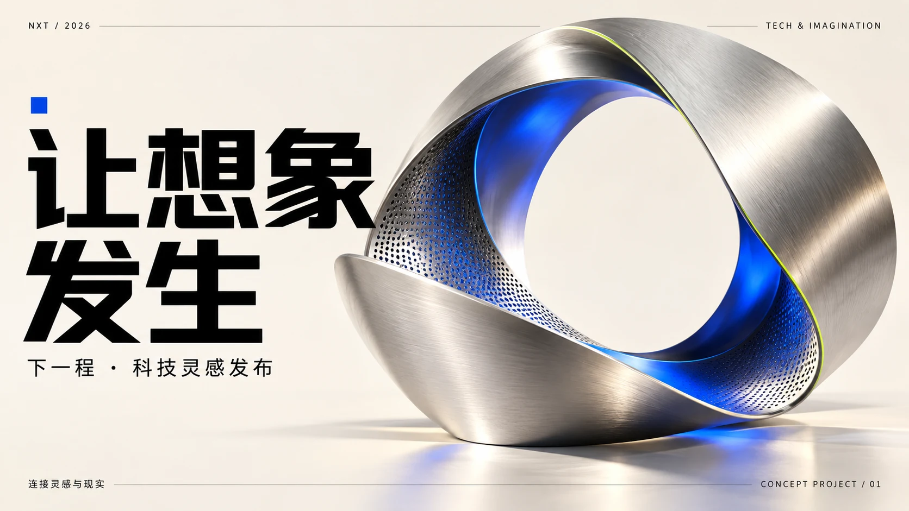
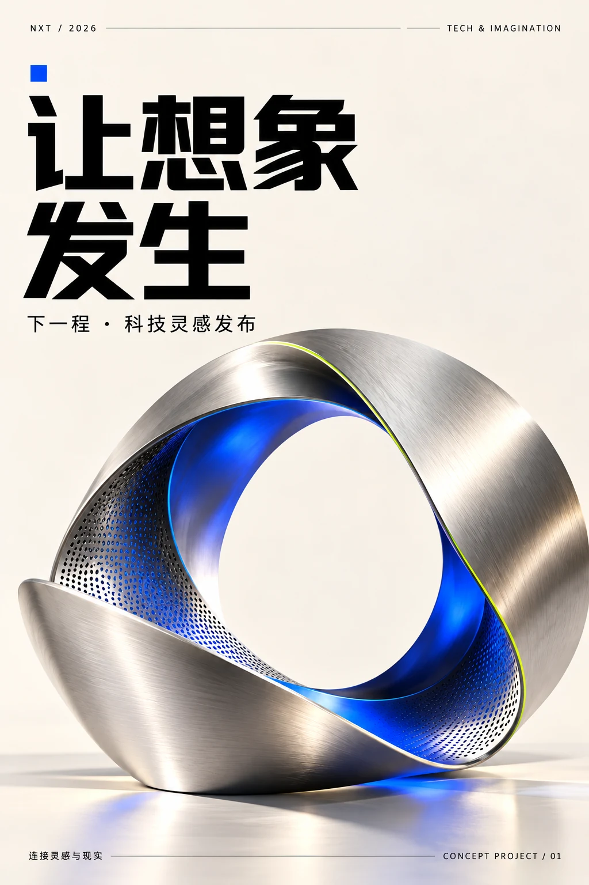
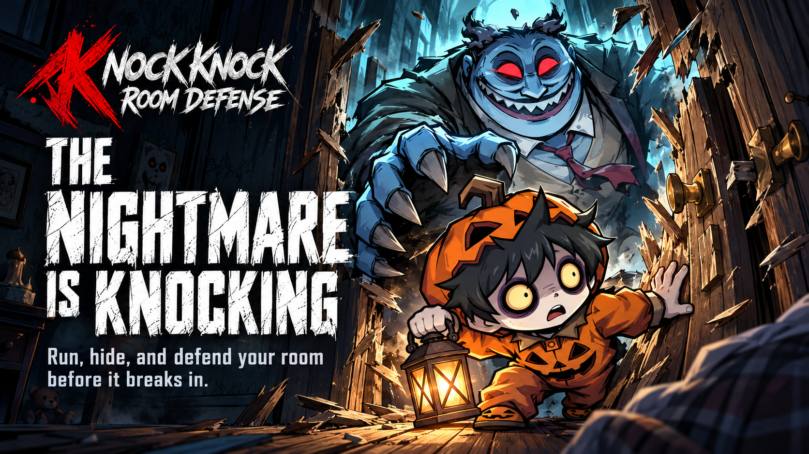
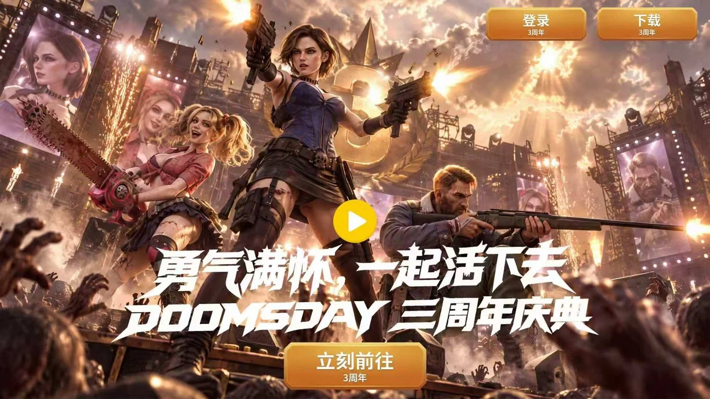
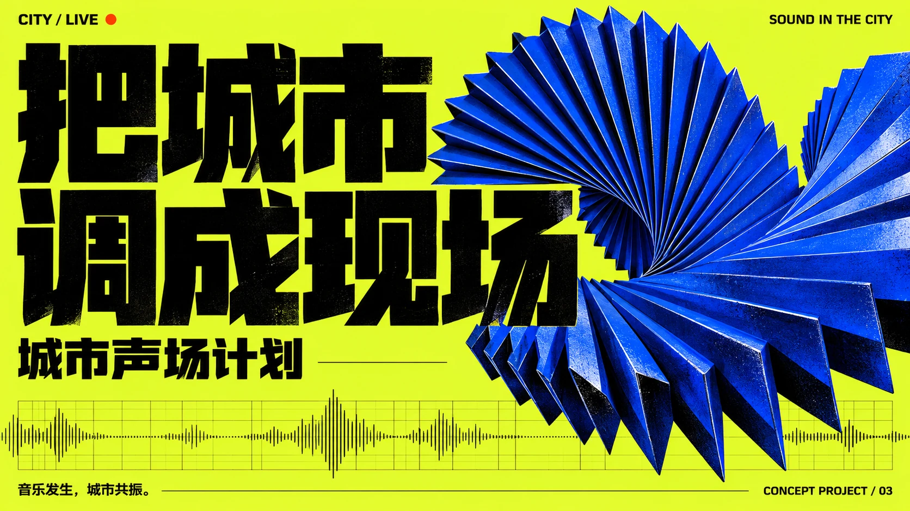
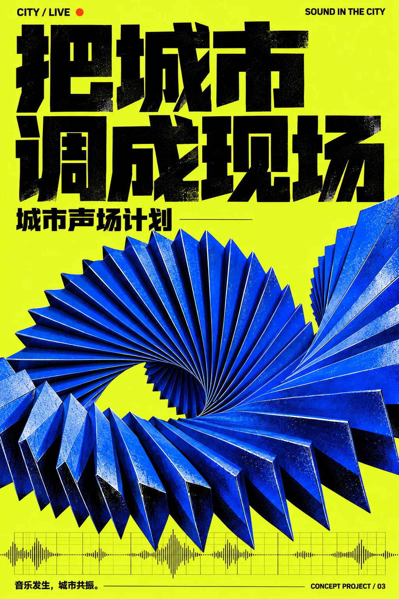

03 / 科技品牌发布 · TECH & IMAGINATION
让想象发生
让连续折叠的金属结构成为灵感走向现实的入口，以银蓝材质与克制留白建立科技品牌的视觉识别。


64 张视觉作品，按用途分为七个方向。KV 试题与原创海报系列优先展示，随后依次为人物、角色特写、幻想生物、场景与史诗、潮玩与毛绒、产品。点击图片可查看完整大图。


围绕科技发布、电商传播与音乐文化三个命题，探索主视觉与竖版海报的统一表达。原创虚构概念项目，AI 辅助生成。
让连续折叠的金属结构成为灵感走向现实的入口，以银蓝材质与克制留白建立科技品牌的视觉识别。


把红色礼带变为商品登场的舞台，串联耳机、灯具与运动鞋，以清晰的信息层级呈现理想日常。
将声音节奏转化为钴蓝折叠雕塑，用高对比配色、切面字体与声波图形传达现场情绪。

